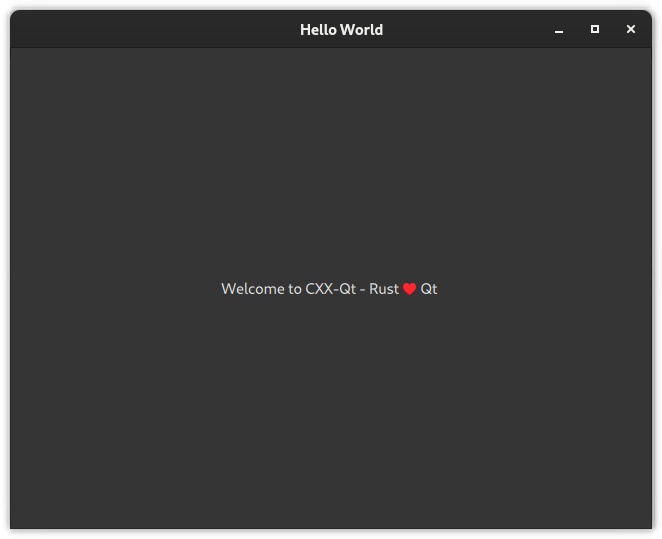
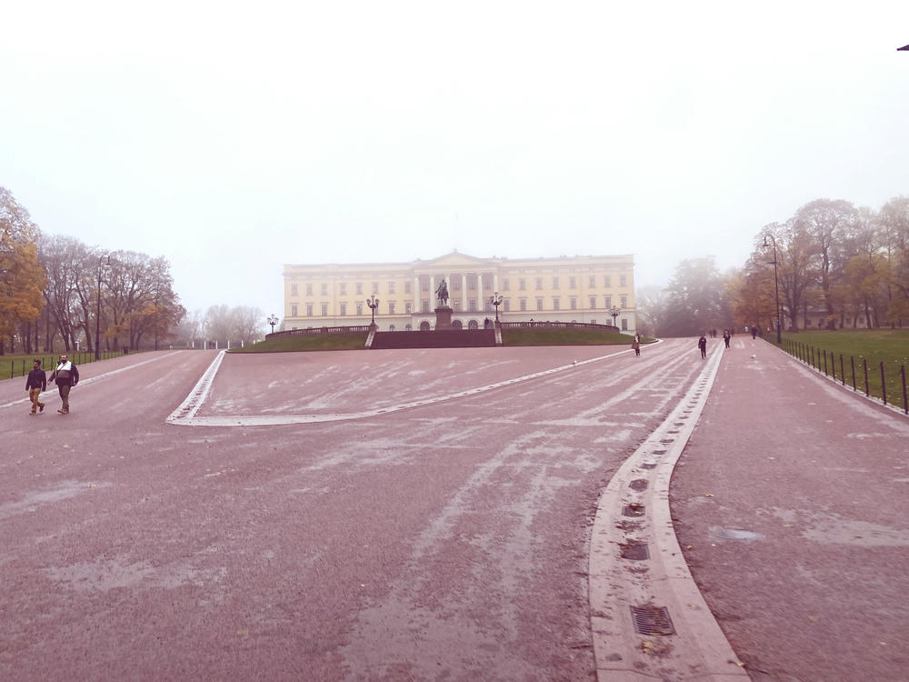
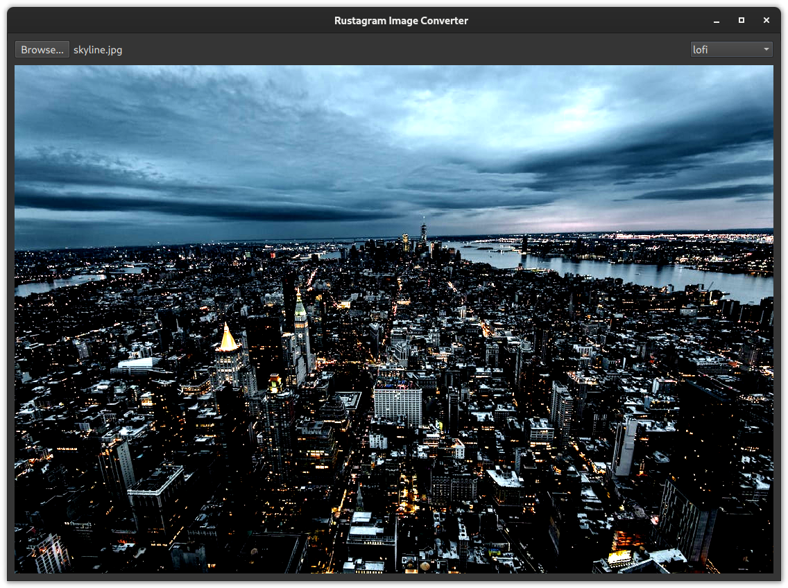
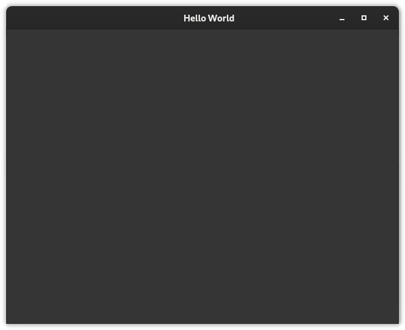
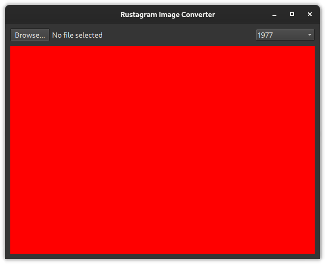
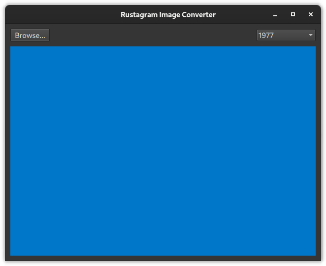

Rust & Qt workshop
This workbook contains the material for a Rust & Qt workshop held by Ferrous Systems, developed and held together with KDAB. It is based on work by Jan-Erik Rediger.
It is split into 2 parts:
Part 1: Setup
An installation guide for all tooling used throughout this book.
Part 2: Tutorial
A hands-on tutorial writing Rust and compiling it in 3 variations: as a command-line app, as a library and as a small Qt app using the library using CXX-Qt.
Preparations
This chapter contains information about the course material and an installation guide.
Workshop Materials
Clone the workshop git repository:
git clone https://github.com/ferrous-systems/qt-training-2023
The workshop repository contains all workshop materials, e.g. code examples, and the source for this workbook.
Required Software
The Setup guide helps you install the required software used throughout this book.
Setup
This section describes how to set up the toolchain for compiling Rust programs to WebAssembly and integrate them with the different environments we will look at.
The Rust Toolchain
You will need the standard Rust toolchain, including rustup, rustc, and
cargo.
Follow these instructions to install the Rust toolchain.
This will install the Rust toolchain and the targets for the host platform.
Windows users need to choose between the msvc and mingw targets.
We recommend the msvc target, unless you already have mingw installed.
The course will only use the stable compiler, we don't require any experimental feature flags. The latest Rust should work best, though older versions have no known issues.
Additional tooling
For those interested in following the Qt section of the course, installation of Qt is needed.
The provided examples use Qt 6 and are tested against Qt 6.5 LTS. If you can only install Qt 5, you will need to modify the QML code, as the FileDialog API has changed between Qt 5 and 6. Apart from that, The Rust-Qt integration (CXX-Qt) should work the same with Qt 5 and Qt 6.
How to install Qt depends a lot on the platform you're using.
Many platforms even have multiple options on how to install Qt.
The main goal is to ensure that qmake for Qt 6 is in your PATH.
You can check this by using qmake --version, which should return something like this:
$ qmake --version
QMake version 3.1
Using Qt version 6.5.1 in /usr/lib64
Linux
Many distributions have Qt already packaged, if your package manager doesn't offer development versions of Qt, you can always fall back to using the Qt online installer.
No matter which installation method you choose, make sure to install the QML (aka. QtQuick/Declarative) and Network modules, as well as any packages needed for QtQuickControls2.
On Fedora for a full installation of Qt, use:
$ dnf install "qt6-*-devel"
Windows
We have had the best experience with installing Qt on Windows using the Qt online installer. Make sure to select and install a version of Qt 6.
Then add the installation directory to your PATH environment variable and make sure qmake is in your PATH by running qmake --version.
You may have to restart your terminal for this to work correctly.
MacOS
Preferrably install Qt using the Qt online installer. Make sure to select and install a version of Qt 6.
You can also try installing Qt using homebrew.
$ brew install qt6
In any case, make sure the installation directory is added to your path and qmake can be found by your command line using qmake --version.
You may have to restart your terminal for this to work correctly.
Tooling check
Setup check
✅ Fully restart your terminal (not just open a fresh tab).
✅ Let's check that you have installed Rust.
$ rustc --version
rustc 1.73.0 (cc66ad468 2023-10-03)
$ cargo --version
cargo 1.73.0 (9c4383fb5 2023-08-26)
✅ In a work directory, run:
$ cargo new --bin hello-world
$ cd hello-world
$ cargo run --release
Compiling hello-world v0.1.0 (C:\Code\ferrous\hello-world)
Finished release [optimized] target(s) in 0.99s
Running `target\release\hello-world.exe`
Hello, world!
This ensures that the whole toolchain works correctly and finds the system linker. This should work at all times, if it doesn't, immediately ask for a trainer.
Qt specifics
For those interested in following the Qt section of the course, the Rust toolchain must be able to find the Qt installation.
The Rust-Qt bindings (CXX-Qt) need to be able to find your Qt installation.
For this it relies on the qmake executable.
CXX-Qt will try to find qmake in your path.
✅ Confirm that qmake reports a version of Qt 6
$ qmake --version
QMake version 3.1
Using Qt version 6.5.1 in /usr/lib64
If for some reason you do not want to add
qmaketo your path, you can use theQMAKEenvironment variable to tell CXX-Qt where to find the Qt6 qmake executable. e.g.:QMAKE=/usr/bin/qmake6 cargo run
Hello world with Qt
To test that the Rust toolchain can indeed find and link to your Qt installation, you can clone the training
repository and run the qt-hello-world example crate.
✅ Clone the repository
$ git clone https://github.com/ferrous-systems/qt-training-2023
✅ Navigate to the qt-hello-world crate
$ cd qt-training-2023/crates/qt-hello-world/
✅ Test that it works
$ cargo run
If you don't have qmake in your PATH, use:
$ QMAKE=/path/to/your/qmake cargo run
The resulting application should look like this:

Idea
We now want to build a slightly more complex application.
The idea is to use an existing image manipulation library to apply filters to a given image1. This example will show us how to use an existing Rust crate, how to handle input and output and how to interact with the different environments.
We start off with building a command-line tool run using wasmtime,
then build a web application running completely client-side,
and last as an edge computing API that processes images posted to it.
We will work with the following example image (but really any image will work). Right-click it and save it to disk for later use.
When applying the filter named "1977", this is the result:

Several more filters are available in the library.
The image filters are inspired by Instagram. The implementation is based on CSSgram, which was ported to Rust by @ha-shine. The example image was taken on 2022-10-28 by Jan-Erik Rediger.
Command-line interface
In this tutorial you'll get familiar with:
- Building Rust code for your local target
- Running applications on the command-line
- Parsing command line parameters by hand
- Re-using existing crates in your application
- Rust type systems basics
We start with a command-line tool that takes an image and a filter name as input.
It applies the given filter to the image and produces an output.png.
Hello World on the command line
✅ Create a new Rust project
cargo new rustagram
cd rustagram
✅ To start the tool will only print a message. Open src/main.rs and add
fn main() {
println!("Hello World from wasmtime!");
}Next, start integrating image filters.
Image filter application
Now that you can build and run an application compiled to WebAssembly, it's time to build some functionality into it.
The goal is:
- Take an input file, a filter name and, optionally, an output file (or "output.jpg" as the default).
- Load the input file, apply the given filter to this image, then write the resulting image to the output file.
You can continue with the previously created project.
✅ Open src/main.rs again and replace the println! line with code to parse the arguments.
fn main() {
let mut args = std::env::args().skip(1);
let input = args.next().expect("INPUT required");
let filter = args.next().expect("FILTER required");
let output = args.next().unwrap_or_else(|| "output.jpg".to_string());
dbg!((input, filter, output));
}✅ Build and run this to make sure it works as expected.
✅ Now add a dependency to handle image manipulation. The image filters are readily available in the rustagram2 crate.
Add the rustagram2 crate as a dependency in rustagram/Cargo.toml
[dependencies]
rustagram2 = "2.0.0"
The documentation is available on docs.rs/rustagram2.
✅ You need a FilterType to apply later.
rustagram2 shows the available filters in the FilterType documentation.
It also has FromStr from the standard library implemented for it, so you can parse strings into the filter type by calling parse() on the string.
let filter_type = filter.parse().expect("can't parse filter name");An unknown filter name would cause an error. For now you don't need to handle that. Your application can just panic and exit.
If you compile everything at this point you will probably hit a type annotation error. You can try to resolve that now. You can also continue and observe how this error will be resolved once you add more code in the next steps.
Now comes the main part of the application: load the image, apply the filter and save the resulting file. This is a small challenge for you to write, but the next steps guide you through it.
✅ You need to read the file from disk and turn it into an object you can work with.
image::open does that for you easily.
Don't worry about error handling and just unwrap.
✅ The image type you get is able to represent a wide variety of image types.
For this tutorial you want an RgbaImage. You can convert your image using the to_rgba8 method.
✅ Last but not least you need to apply the selected filter on this image.
The rustagram2 crate implements that as the apply_filter method on a trait.
This trait is automatically implemented for the RgbaImage type you got from to_rgba8.
✅ Save back to the file output by using the save method available on the image.
With the help of the documentation this should be achievable in a couple of lines of code.
Try it for yourself!
✅ Once you wrote the code, build it again and try to run it.
Expected output when you don't pass any arguments:
$ cargo run
thread 'main' panicked at src\main.rs:5:29:
INPUT required
note: run with `RUST_BACKTRACE=1` environment variable to display a backtrace
Expected output when you pass a non-existing file path and a filter name:
$ cargo run -- missing-image.jpg 1977
Finished dev [unoptimized + debuginfo] target(s) in 0.09s
Running `target\debug\rustagram.exe kongelige-slott.jpg 1977`
thread 'main' panicked at src\main.rs:10:34:
called `Result::unwrap()` on an `Err` value: IoError(Os { code: 2, kind: NotFound, message: "The system cannot find the file specified." })
note: run with `RUST_BACKTRACE=1` environment variable to display a backtrace
Expected output when you pass the file actually exists.
$ cargo run -- kongelige-slott.jpg 1977
Finished dev [unoptimized + debuginfo] target(s) in 0.09s
Running `target\debug\rustagram.exe kongelige-slott.jpg 1977`
The result should then be stored in output.jpg.
Final application
You should have this file tree layout:
$ tree
.
├── Cargo.lock
├── Cargo.toml
└── src
└── main.rs
To recap your final code should look something like this:
use rustagram::{image, RustagramFilter};
fn main() {
let mut args = std::env::args().skip(1);
let input = args.next().expect("INPUT required");
let filter = args.next().expect("FILTER required");
let output = args.next().unwrap_or_else(|| "output.jpg".to_string());
let filter_type = filter.parse().expect("can't parse filter name");
let img = image::open(input).unwrap();
let out = img.to_rgba8().apply_filter(filter_type);
out.save(output).unwrap();
}You can build your code like this:
cargo build
And run it using cargo:
cargo run
For an optimized build use:
cargo build --release
cargo run --release
Some ideas on what to do next:
- Run the application natively:
cargo run. Any complications or differences? - Heard of WebAssembly? You can actually run this in WebAssembly - see our WASM Training
- Try a full command line parser crate - see blessed.rs for suggestions
Library
In this tutorial you'll get familiar with:
- Refactoring your Rust project into multiple libraries (crates)
- Running applications on the command-line
- Parsing command line paramenters by hand
- Re-using existing crates in your application
- Learn about borrowing
We start with a command-line tool that takes an image and a filter name as input.
It applies the given filter to the image and produces an output.png.
Recreate the project as workspace
Let's get started by creating a so-called "cargo workspace". In a growing project, this is a common refactoring, however, given the simplicity of our CLI app, it's easier to just start from the beginning again.
✅ Create yourself an working directory
$ mkdir image-workspace
$ cd image-workspace
✅ create a library crate for image manipulation
$ cargo new --lib image-manipulation
✅ create a binary crate for the CLI app
$ cargo new --bin cli
You folder structure should currently look like this:
$ tree
.
└── cli
└── image-manipulation
✅ create a file called Cargo.toml in the main folder:
$ tree
.
└── Cargo.toml
└── cli
└── image-manipulation
✅ fill that file with the following info:
[workspace]
members = ["cli", "image-manipulation"]
resolver = "2"
✅ build the whole workspace once to check everything works
$ cargo build
Move on to creating the library.
Creating a library
In this section of the tutorial, you will create a library to handle image manipulation. This library will have exactly one function. It should:
- Take a field of bytes representing an image
- Take a filter type
It should not:
- Handle any I/O
- Do input parsing (like filter name detection, etc.)
✅ In image-manipulation/Cargo.toml, add:
[dependencies]
rustagram2 = "2"
log = "0.4"
We use the log crate to get some visibility into what is happening.
✅ In image-manipulation/src/lib.rs, add the following imports and function headers
use std::io::Cursor;
use rustagram::image::io::Reader;
use rustagram::image::ImageOutputFormat;
use rustagram::{RustagramFilter, FilterType};
pub fn apply_filter(img: &[u8], filter: FilterType) -> Vec<u8> {
log::debug!("image: {} bytes, filter: {:?}", img.len(), filter);
}This communicates three interesting things:
- The function is marked
pub- this makes it a public function, callable from other libraries. The default in Rust is always private. - The data of the image is an immutable reference to binary data owned outside of the function
- The result is a binary vector, but passed out owned - so it cannot be the initial data
Reading the image
Looking at the signature of Reader, we find that it can only be construted using types that implement the Read trait. &[u8] does not implement the Read trait. However, we can use the
standard libraries Cursor type
to fix that.
✅ Read the image by inserting the following code
let read_cursor = Cursor::new(img);
let img = Reader::new(cursor)
.with_guessed_format()
.unwrap()
.decode()
.unwrap();Now we got the image read and know it works.
✅ Apply the filter
let out = img.to_rgba8().apply_filter(filter);On the output side, things are the same, but a little bit more complex.
We need to create the output vector. For writing to it, we can again create
a Cursor around it, but this time, we'll do it by mutably borrowing the
Cursor. We can then write to it like to any other IO type.
✅ Write to an output buffer
let mut bytes: Vec<u8> = Vec::new();
let mut write_cursor = Cursor::new(&mut bytes);
out.write_to(&mut write_cursor, ImageOutputFormat::Png)
.unwrap();
bytesThe last statement - a bare bytes - uses Rusts expression-based nature to mark
bytes as the variable to be returned. If you feel more comfortable, you may use
return bytes.
The final code of the library should now read:
use std::io::Cursor;
use rustagram::image::io::Reader;
use rustagram::image::ImageOutputFormat;
use rustagram::{RustagramFilter, FilterType};
pub fn apply_filter(img: &[u8], filter: FilterType) -> Vec<u8> {
log::debug!("image: {} bytes, filter: {:?}", img.len(), filter);
let read_cursor = Cursor::new(img);
let img = Reader::new(cursor)
.with_guessed_format()
.unwrap()
.decode()
.unwrap();
let out = img.to_rgba8().apply_filter(filter);
let mut bytes: Vec<u8> = Vec::new();
let mut write_cursor = Cursor::new(&mut bytes);
out.write_to(&mut write_cursor, ImageOutputFormat::Png)
.unwrap();
bytes
}Now that we have a library let's use it in our CLI
Some ideas on what to do next:
- Create further utility functions
- Extend the signature and return a
Result
Creating a CLI using the library
Let's now use the library we created in our small CLI app.
✅ In cli/Cargo.toml, add:
[dependencies]
rustagram2 = "2"
[dependencies.image-manipulation]
path = "../image-manipulation"
✅ Recreate parts of the main function:
use image_manipulation::apply_filter;
use rustagram::FilterType;
fn main() {
let mut args = std::env::args().skip(1);
let input = args.next().expect("INPUT required");
let filter = args.next().expect("FILTER required");
let output = args.next().unwrap_or_else(|| "output.jpg".to_string());
let filter_type: FilterType = filter.parse().expect("can't parse filter name");
}As our image manipulation library does not handle IO, we will reach for the std::fs::{read,write} function.
✅ Read the image as input
let bytes: Vec<u8> = std::fs::read(input).unwrap();The type annotation here isn't strictly necessary and is generally omitted, but helps during explaining the example.
✅ Call the apply_filter library function
let manipulated_image = apply_filter(&bytes, filter_type);Note the referencing sigil in front of bytes.
✅ Write the output to disk
std::fs::write(output, manipulated_image).unwrap();Some ideas on what to do next:
- Instead of unwrapping all errors, handle
Resultotherwise
Building a Qt (QML) GUI with Rust
In this tutorial you'll get familiar with:
- Setting up the Rust build system to link with Qt
- Starting a Qt/QML application from Rust
- Creating QObjects in Rust and using them in your QML GUI
We will create a small GUI that can load an image, apply a filter to it and display the result.
The result will look something like this:

Building a simple Qt application with Rust
CXX-Qt provides helper libraries that make it easy for the Rust build system to link to Qt.
The goal for now is to create a simple program that just launches an Qt/QML application.
✅ Create a new Rust application
cargo new qt-gui
cd qt-gui
✅ Add a simple QML main file in qml/main.qml
import QtQuick 2.15
import QtQuick.Controls 2.15
import QtQuick.Window 2.15
ApplicationWindow {
height: 480
title: qsTr("Hello World")
visible: true
width: 640
}
✅ Add dependencies to the Cargo.toml file
[dependencies]
rustagram2="2"
cxx="1.0.95"
cxx-qt = { git="https://github.com/LeonMatthesKDAB/cxx-qt", branch="qimage" }
cxx-qt-lib = { git="https://github.com/LeonMatthesKDAB/cxx-qt", branch="qimage" }
[build-dependencies]
# The "link_qt_object_files" is required when using Cargo to link to Qt statically.
cxx-qt-build = { git="https://github.com/LeonMatthesKDAB/cxx-qt", branch="qimage", features = [ "qt_qml", "link_qt_object_files" ] }
- At the time of writing (15.11.2023), CXX-Qt 0.6 hasn't been released yet.
- To keep the training material up-to-date with the new API introduced in version 0.6,
- we'll use the version from Github for now.
- The training material on Github will be updated as soon as version 0.6 is released!
- Do note that the public documentation for CXX-Qt is still for version 0.5.
- You should wait before following this tutorial until version 0.6 is
- released in the coming weeks.
Future imports once CXX-Qt 0.6 is released
[dependencies]
rustagram2="2"
cxx="1.0.95"
cxx-qt="0.6"
cxx-qt-lib="0.6"
[build-dependencies]
# The "link_qt_object_files" is required when using Cargo to link to Qt statically.
cxx-qt-build = { version="0.6", features = [ "qt_qml", "link_qt_object_files" ] }
CXX-Qt is split up into multiple crates.
- CXX-Qt - Allows you to create QObjects from Rust and to interact with existing QObjects
- CXX-Qt-lib - Library of bindings to Qt types like
QString,QApplication, etc. - CXX-Qt-build - A build-system library to link Rust with Qt, build QML modules, etc.
We will also need CXX itself later on, so include that as well.
✅ Next to the Cargo.toml file, add a build.rs file with the following contents:
use cxx_qt_build::{CxxQtBuilder, QmlModule};
fn main() {
CxxQtBuilder::new()
// - Qt Core is always linked
// - Qt Qml is linked by enabling the qt_qml Cargo feature.
// - Qt Qml requires linking Qt Network on macOS
.qt_module("Network")
.qt_module("Quick")
.qml_module(QmlModule::<&str, _> {
uri: "com.kdab.cxx_qt.demo",
rust_files: &[],
qml_files: &["qml/main.qml"],
..Default::default()
})
.build();
}It uses the cxx-qt-build library to:
- Check that the QtQuick module is available
- Create a QML module out of the
main.qmlfile. - Link the QML module and Qt itself to our Rust application.
Troubleshooting: It is important that the
build.rsfile is next to theCargo.tomlfile at the root of the crate.It can NOT be located in the
src/directory.
✅ Add the startup code to src/main.rs
use cxx_qt_lib::{QGuiApplication, QQmlApplicationEngine, QUrl};
fn main() {
// Create the application and engine
let mut app = QGuiApplication::new();
let mut engine = QQmlApplicationEngine::new();
// Load the QML path into the engine
if let Some(engine) = engine.as_mut() {
engine.load(&QUrl::from("qrc:/qt/qml/com/kdab/cxx_qt/demo/qml/main.qml"));
}
// Start the app
if let Some(app) = app.as_mut() {
app.exec();
}
}Take a minute to thoroughly read this code and compare it to a typical C++ main function that launches a Qt application.
❓ What is different? What is similar?
❓ Why are theif let Some(...)expressions necessary?
✅ Run the application
cargo run
If
qmakeis not in your path, remember to tell Cargo where to find it with theQMAKEenvironment variable.QMAKE=.../qmake cargo run
✅ An empty window appears 
Creating the QML GUI
The goal of this part is to add a QML GUI for our application. For now, we can leave out loading an actual file. You can just use a rectangle as a placeholder for now.
In the end it should look similar to this: 
The red rectangle serves as a placeholder for our filtered image.
✅ Add the control elements to qml/main.qml
You can use Qt Quick Controls 2 for this. The list of available QML types is listed in the Qt documentation.
The controls should include:
- ✅ A
Buttonto browse files - ✅ A
Labelshowing the currently selected file. - ✅ A
ComboBoxthat should include:
"1977",
"nineteenseventyseven",
"aden",
"brannan",
"brooklyn",
"clarendon",
"earlybird",
"gingham",
"hudson",
"inkwell",
"kelvin",
"lark",
"lofi",
"maven",
"mayfair",
"moon",
"nashville",
"reyes",
"rise",
"slumber",
"stinson",
"toaster",
"valencia",
"walden",
✅ Lay out the Control elements using layouts
✅ Add a Rectangle as a placeholder for our image converter
✅ Hook up the Browse... button to open a FileDialog.
Creating a QQuickPaintedItem in Rust
To render a QImage instance in QML there are two simple approaches
- Subclass
QQuickPaintedItemand use theQPainterinterface - Provide a custom
QQuickImageProvider.
Because QPainter is very versatile and easy to implement with CXX-Qt, we'll use the first approach for our use-case.
✅ Add a new Rust file for the QQuickPaintedItem subclass (e.g. called image_painter.rs).
$ tree -I "target/"
.
├── build.rs
├── Cargo.lock
├── Cargo.toml
├── qml
│ └── main.qml
└── src
├── image_painter.rs
└── main.rs
3 directories, 6 files
Before you do anything else, make sure to
✅ Register this file with the build system
Because we will be using the #[cxx_qt::bridge] macro, we have to register this file twice.
- In the
src/main.rsfile, add a line:pub mod image_painter;
This registers the new file as a module of our application and makes it known to Cargo. - In the
build.rsfile, add the file to the list of rust_files of the QmlModule.
This registers the new file with CXX-Qt. It tells CXX-Qt to generate a C++ class from it, run moc and link the resulting class into our application. This is only necessary because we want to use CXX-Qt within the file. Doing this second step is not necessary for a normal Rust module.
use cxx_qt_build::{CxxQtBuilder, QmlModule};
fn main() {
CxxQtBuilder::new()
// - Qt Core is always linked
// - Qt Qml is linked by enabling the qt_qml Cargo feature.
// - Qt Qml requires linking Qt Network on macOS
.qt_module("Network")
.qt_module("Quick")
.qml_module(QmlModule {
uri: "com.kdab.cxx_qt.demo",
rust_files: &["src/image_painter.rs"], // <- Add all files that
qml_files: &["qml/main.qml"], // include a #[cxx_qt::bridge].
..Default::default()
})
.build();
}It is a common mistake to forget to include CXX-Qt files in the
build.rsscript. Make sure to try removing the file from the list so you know what happens in this case.❓ What error do you get?
Now we can start adding a new QQuickPaintedItem subclass.
CXX-Qt allows us to create new QObject (and therefore QQuickPaintedItem) subclasses.
These subclasses are defined in C++ and their data layout cannot be changed from Rust directly.
Instead, every subclass generated by CXX-Qt contains an instance of a Rust struct.
It is this Rust struct that therefore defines the data layout used within CXX-Qt objects.
We can create a new QObject class for any Rust struct we like.
✅ Create a new empty Rust struct for our class
The struct should implement the Default trait.
Ideally name the struct ImagePainterRust.
Example definition
#[derive(Default)]
struct ImagePainterRust {}Now we can create our QQuickPaintedItem subclass by using a #[cxx_qt::bridge] module.
This bridge module is similar to a header file in C++. It only includes declarations, not definitions. Using the bridge we can declare which items exist in C++ and expose them to Rust. And we can also declare Rust items to be exposed to C++.
The syntax is based on and compatible with CXX. You can read up on CXX in the CXX book.
To create our QQuickPaintedItem subclass, we first need to include the appropriate C++ headers,
then declare the types we want to use from Rust.
For our first example, we'll only set the fillColor and not actually paint anything using the QPainter.
✅ Create a new #[cxx_qt::bridge] module
It should include the following declarations/includes:
- ✅ An import of
QColorfrom cxx-qt-lib (see the CXX-Qt documentation) - ✅ An include to the
QQuickPaintedItemheader - ✅ An include for the
QPainterheader, as well as a declaration of theQPaintertype.
#[cxx_qt::bridge(cxx_file_stem = "image_painter")]
pub mod qobject {
unsafe extern "C++" {
include!("cxx-qt-lib/qcolor.h");
type QColor = cxx_qt_lib::QColor;
include!(<QtQuick/QQuickPaintedItem>);
}
unsafe extern "C++" {
include!(<QtGui/QPainter>);
type QPainter;
}
}Take a look at the CXX documentation and the CXX-Qt-lib documentation.
❓ Is
QColoran opaque or a trivial type? What does this mean when using QColor in Rust?
❓ What's the difference between declaring atype QPaintervs.type QPainter = ...;?
❓ What's the difference betweenunsafe extern "C++"andextern "C++"?
❓ (advanced) Why is theinclude!("cxx-qt-lib/qcolor.h");necessary?
Now that we have our types ready to go, we can declare our new QQuickPaintedItem subclass.
With CXX-Qt this means following these steps:
- ✅ Create a new QObject subclass using
type X = super::Y;with the#[qobject]attribute- This tells CXX-Qt to create a new QObject subclass of the name
X. This class will contain an instance of thesuper::YRust struct which contains the actual data (nothing for now).
- This tells CXX-Qt to create a new QObject subclass of the name
- ✅ Tell CXX-Qt to use
QQuickPaintedItemas our base class using#[base="..."] - ✅ Declare the necessary functions
- ✅ Tell Rust that
setFillColoris inherited fromQQuickPaintedItem - ✅ Declare that
paintshould override the base class implementation and is implemented in Rust.
- ✅ Tell Rust that
- ✅ Tell CXX-Qt that we want a default-constructor for
ImagePainter.- We'll implement this constructor later in Rust.
Whilst we won't be using the
paintfunction right now, we still need to implement it as it is a pure virtual function.If you forget to implement this function, you may get an error like this:
ImagePainter is neither a QObject, nor default- and copy-constructible, nor uncreatable. You should not use it as a QML type. QQmlApplicationEngine failed to load component qrc:/qt/qml/com/kdab/cxx_qt/demo/qml/main.qml:75:9: Element is not creatable.
#[cxx_qt::bridge(cxx_file_stem = "image_painter")]
pub mod qobject {
// ...
unsafe extern "RustQt" {
#[qml_element]
#[base = "QQuickPaintedItem"]
#[qobject]
type ImagePainter = super::ImagePainterRust;
#[inherit]
#[rust_name = "set_fill_color"]
fn setFillColor(self: Pin<&mut ImagePainter>, color: &QColor);
#[cxx_override]
unsafe fn paint(self: Pin<&mut ImagePainter>, painter: *mut QPainter);
}
impl cxx_qt::Constructor<()> for ImagePainter {}
}Some food for thought:
❓ What does the
#[qml_element]attribute do?
❓ Why doespaintneed to be markedunsafe? What happens without it?
❓ Is thecxx_qt::Constructordeclaration always needed? Why is it necessary in this case?Try figuring this out using the CXX and the CXX-Qt books.
Now that we've written our declarations we still need implementations for:
- ✅ The
paintfunction - ✅ The default constructor
Remember that our CXX-Qt bridge only includes declarations. So any definitions go outside the bridge.
#[cxx_qt::bridge(cxx_file_stem = "image_painter")]
pub mod qobject {
// ...
}
impl cxx_qt::Initialize for qobject::ImagePainter {
fn initialize(mut self: Pin<&mut Self>) {
self.as_mut().set_fill_color(&QColor::from_rgb(0, 119, 200));
}
}
impl qobject::ImagePainter {
fn paint(self: Pin<&mut Self>, _painter: *mut qobject::QPainter) {
// Do nothing (yet)
}
}Note that the constructor is implemented using the
cxx_qt::Initializetrait instead of the more complexcxx_qt::Constructor<()>trait.✅ (optional) If you feel up to it, try to replace the
impl cxx_qt::Initializewith a fullimpl cxx_qt::Constructorimplementation.
Now our type should be ready for a first test in our QML GUI.
✅ Replace the placeholder rectangle with an ImagePainter instance in qml/main.qml.
It should now display a more pleasant blue.

If you're having trouble, check out the full example code
Adding behavior in Rust
At the moment our ImagePainter doesn't do anything, not even paint an image.
So let's add some behavior. We want our ImagePainter to load a file from a given path, display a status for errors, etc.
✅ First, add the necessary fields to the ImagePainterRust struct
- ✅ The image path to load from
- ✅ Current status
- ✅ The converted image
- ✅ A boolean to indicate whether the conversion is currently running
- ✅ The filter to use for conversion
✅ Then make sure to initialize the values to sensible definitions by adding a custom implementation of the Default trait.
✅ And don't forget to import the new types with use.
Example definition
use cxx_qt_lib::{QColor, QImage, QString, QUrl};
pub struct ImagePainterRust {
filter: QString,
status: QString,
running: bool,
file_url: QUrl,
image: Option<QImage>,
}
impl Default for ImagePainterRust {
fn default() -> Self {
Self {
filter: QString::from("1977"),
status: QString::from("No file selected"),
image: None,
file_url: QUrl::default(),
running: false,
}
}
}Now that we've added members to the Rust side, let's expose them as Q_PROPERTYs.
To do so, add #[qproperty([TYPE], [FIELD_NAME])] attributes to the #[qobject] type declaration for every property.
Note that the image itself won't be a property as QML unfortunately can't easily render QImage instances.
We'll use the QPainter for this.
✅ Add properties for status, filter, running and file_url.
✅ Add the imports for the necessary types (QString, QUrl) to the #[cxx_qt::bridge].
Example definition
#[cxx_qt::bridge(cxx_file_stem = "image_painter")]
pub mod qobject {
unsafe extern "C++" {
include!("cxx-qt-lib/qcolor.h");
type QColor = cxx_qt_lib::QColor;
include!("cxx-qt-lib/qurl.h");
type QUrl = cxx_qt_lib::QUrl;
include!("cxx-qt-lib/qstring.h");
type QString = cxx_qt_lib::QString;
include!(<QtQuick/QQuickPaintedItem>);
}
// ...
unsafe extern "RustQt" {
#[qml_element]
#[base = "QQuickPaintedItem"]
#[qobject]
#[qproperty(QString, status)]
#[qproperty(QString, filter)]
#[qproperty(QUrl, file_url)]
#[qproperty(bool, running)]
type ImagePainter = super::ImagePainterRust;
// ...
}
// ...
}✅ Check the new properties work by hooking them up to QML.
They don't do anything yet, but you also shouldn't get any errors from QML.
✅ Create a new function on our ImagePainter that will later get called whenever we need to update the image:
impl qobject::ImagePainter {
fn load_file(mut self: Pin<&mut Self>) {
println!("Hello world from CXX-Qt");
}
}✅ Hook up the function so it is called whenever the filter or the file path change
impl cxx_qt::Initialize for qobject::ImagePainter {
fn initialize(mut self: Pin<&mut Self>) {
self.as_mut().set_fill_color(&QColor::from_rgb(0, 119, 200));
self.as_mut().on_filter_changed(Self::load_file).release();
self.as_mut().on_file_url_changed(Self::load_file).release();
}
}Try finding explanations for these answers in the CXX-Qt book.
❓ Why is the
release()call necessary after connecting to a signal?
❓ How can you change the connection type when connecting to a signal from Rust?
✅ Check that you can successfully print "Hello world from CXX-Qt!" by selecting a file path or changing the image filter
Before we implement the image loading and filtering, we'll need some additional types:
- QByteArray (and the QByteArrayCursor helper)
- QSizeF and QRectF to calculate the size for painting
✅ Import these types from cxx-qt-lib
✅ Add QSizeF and QRectF to the #[cxx_qt::bridge]
We'll also need a few more functions from C++ to paint the image, get the size of the ImagePainter, etc.
✅ Add declarations for the following functions to the #[cxx_qt::bridge]
✅ Tell CXX-Qt to enable threading support by means of the cxx_qt::Threading trait
Example declarations
#[cxx_qt::bridge(cxx_file_stem = "image_painter")]
mod qobject {
// ...
unsafe extern "C++" {
include!(<QtGui/QPainter>);
type QPainter;
#[rust_name = "draw_image"]
fn drawImage(self: Pin<&mut QPainter>, rectangle: &QRectF, image: &QImage);
}
unsafe extern "RustQt" {
// ...
#[inherit]
fn size(self: &ImagePainter) -> QSizeF;
#[inherit]
fn update(self: Pin<&mut ImagePainter>);
}
impl cxx_qt::Threading for ImagePainter {}
// ...
}✅ Add code to load the selected image from disk and display it in the update function
Documentation that may be useful:
- CXX-Qt-lib for using Qt types from Rust
- rustagram2
- Click on the Re-export of the
imagecrate to learn more about how to use the resulting image.
- Click on the Re-export of the
- Rust standard library documentation
✅ Add threading in Rust via std::thread::spawn to load and convert the image in the background
- Check out the CXX-Qt book to learn more about Threading
✅ Add a BusyIndicator to QML to show that the background thread is wthat the background thread is waiting.
The resulting application should look like this:
✅ Check out the full example code and compare it with your implementation